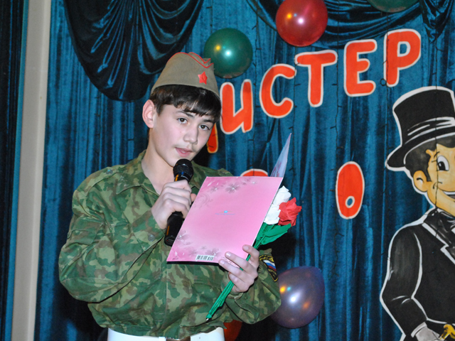

Традиционный конкурс, посвященный Дню защитника Отечества, прошел в Астраханской школе-интернате №2 для детей-сирот и детей, оставшихся без попечения родителей с ограниченными возможностями здоровья. Молодые энергетики, входящие в состав жюри, учредили свой приз и выбрали «Мистера энергия».
Члены Молодежного совета Астраханской территориальной (областной) профсоюзной организации Общественной организации «Всероссийский Электропрофсоюз», как всегда приехали в подшефный интернат, чтобы поздравить детей-сирот с Днем защитника Отечества и принять участие в судействе в конкурсе «А ну-ка, мальчики!».
В этом году организаторы конкурса усложнили работу жюри, пригласив на праздник курсантов Каспийского института морского и речного транспорта. Хорошая спортивная подготовка старших товарищей стала отличным стимулом для соревнования. Каждый мог проявить себя, свои способности.
Проигравших, как и положено в таких соревнованиях, не было – победила дружба. Каждый класс получил сладкий приз от администрации интерната и от шефов. Но, по признанию болельщиков, чтобы поощрить за старания самого активного участника конкурса, энергетики по традиции учредили особый приз и выбрали «Мистера энергия». Им стал ученик 10 класса Василий Митрофанов.
Этого мальчика энергетики знают несколько лет. За годы совместного общения он действительно преуспел в спорте: увлекается футболом, силовыми тренировками, легкой атлетикой.
Вручая приз победителю – футбольный мяч, член Молодежного совета Астраханского «Электропрофсоюза» Вера Селезнева пожелала юному спортсмену новых побед и успехов не только в спорте, но и в учебе.
